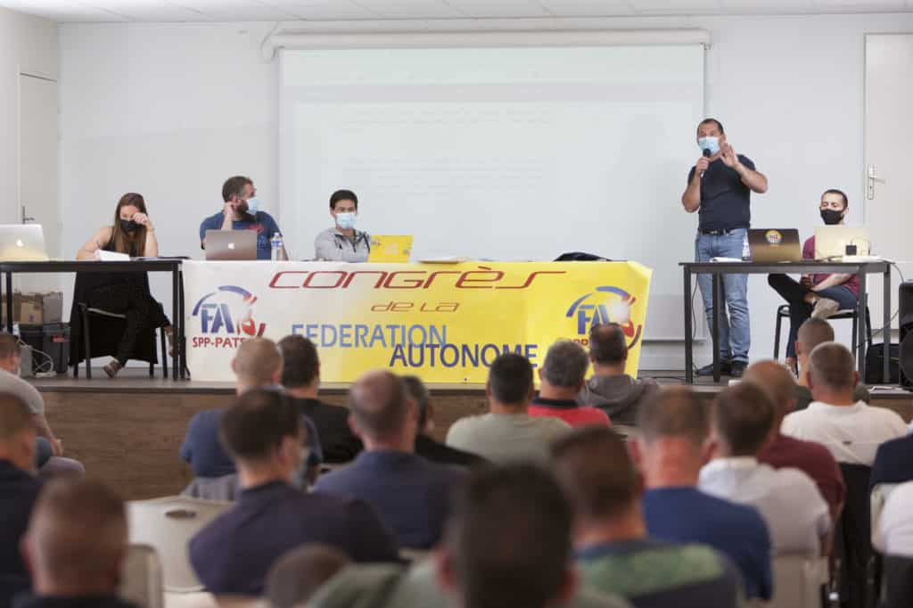
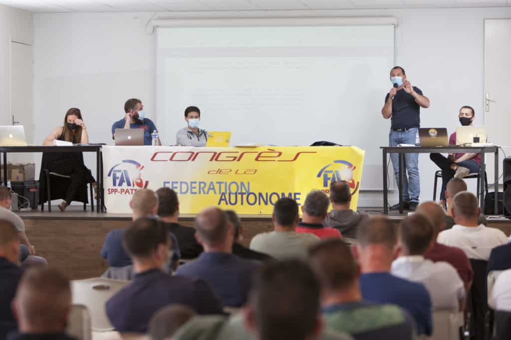

Bienvenue sur le site du SA 06, Première Force Syndicale du SDIS 06
-

La DGSCGC rappelle enfin aux SIS leurs obligations sur la traçabilité des expositions professionnelles, applicables dès le 1er janvier 2025.
-

Moyens insuffisants = Pompiers en danger ! Les SIS doivent défendre leurs agents !
-

[Entretien] "Le Premier ministre a rompu le contrat. Le conclave tel qu'il a démarré ne peut plus continuer."
-

Expression Directe : pénibilité, préserver la santé des travailleurs et travailleuses
-

Participez à la prépa du congrès national !
-

Le travail que nous voulons : les revendications de la FA pour faire vivre la démocratie au travail
-

Le Syndicat Autonome 06 sur les réseaux sociaux

Qu'est-ce que le Syndicat Autonome ?
Le Syndicat Autonome est la première force syndicale des SDIS de France. Ce résultat est le fruit du travail et de l’engagement des militants et des militantes du Syndicat Autonome, et le reflet de la confiance que les travailleurs et les travailleuses leur accordent pour améliorer leurs droits.
Partout en France, sur votre lieu de travail ou près de chez vous, le Syndicat Autonome vous accueillent pour répondre à vos questions et vous accompagner.
-
Le Syndicat Autonome en bref
10 points essentiels pour mieux connaître le premier syndicat des SDIS de France.
-
Nos revendications
Découvrez nos revendications thème par thème et nos propositions en faveur de l’amélioration des conditions de travail de chacun.e.
-
Nos valeurs
Quatre valeurs et un principe d'action qui font des femmes et des hommes les véritables actrices et acteurs de leurs choix de vie.
5 raisons d'adhérer
-
Défendre mes droits en rejoignant la 1ère organisation syndicale du SDIS 06
En rejoignant la SA 06, je défends mes droits et je contribue à les renforcer ! Grâce au poids de ses adhérentes et de ses adhérents, le SA 06 pèse dans les négociations et les concertations pour défendre les droits de tous les travailleurs et toutes les travailleuses.
-
Obtenir de nouveaux droits pour tous et toutes
Grâce à son action et au poids de ses adhérents et de ses adhérentes, le Syndicat Autonome 06 obtient des résultats concrets à l’échelle locale et nationale, pour une meilleure protection de chacun et de chacune, et de nouveaux droits pour tous et toutes.
-
Bénéficier de services exclusifs
Être adhérent ou adhérente au Syndicat Autonome 06, c’est aussi avoir accès à une offre de services personnalisées et multicanale d’assurances, de publications, de formations, etc., qui sont inclus dans le prix de mon adhésion.
-
Être informé.e et rester connecté.e à toute l’actualité professionnelle et sociale qui me concerne
Notre site vous donne accès à de très nombreuses informations et publications sur tous les sujets du travail (emploi, formation, réforme de l’assurance chômage, droits, etc.) ainsi qu’à des vidéos et des documents téléchargeables.
-
Intégrer les réseaux de la FA
Que vous soyez salariée, agent ou agente des fonctions publiques, cadre, travailleur ou travailleuse indépendant, auto-entrepreneur.e, ou même retraité.e, vous avez une structure FA dédiée qui porte votre voix, défend votre statut et vos droits. Vous pouvez compter sur la Fédération Autonome et sur tout son réseau pour vous défendre en cas de difficultés.


 

La FA et moi
Avec des milliers d'adhérentes et d'adhérents et de nombreux syndicats présents sur tout le territoire, la Fédération Autonome et le Syndicat Autonome 06 sont à vos côtés dans tous les secteurs d'activité. Un conseil ? Une question ? Besoin d'être accompagné·e dans une démarche ou une situation professionnelle ? Envie de vous informer sur nos actions près de chez vous ou dans votre secteur d’activité ? Retrouvez toutes nos informations et nos contacts sur nos sites.
Cartographie des Syndicats Autonomes !
Sélectionnez un département
Cliquez sur un département pour afficher les informations du syndicat autonome.
Syndicat autonome présent
Pas de syndicat autonome